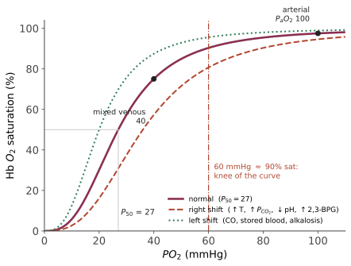

本页目录
正常 IV · 整合生理：循环-呼吸-肾的耦合
单器官生理学容易给人一个错觉：这些系统各干各的。实际上循环、呼吸、肾共同服务于两个目标——把氧送到线粒体、把 pH 维持在 7.40。本页把它们当成一个系统来看，这也是理解休克、心衰、呼吸衰竭、酸碱紊乱的唯一有效方式。
1. 氧输送：一条贯穿全站的公式
氧输送量 \(DO_2\)：
代入正常值（CO 5 L/min，Hb 15 g/dL，SaO₂ 0.98）：\(CaO_2 \approx 20\) mL/dL，\(DO_2 \approx 1000\) mL/min。静息耗氧 \(VO_2 \approx 250\) mL/min，因此摄取率约 25%，储备约 4 倍。
这个公式的临床读法：低氧组织损伤有四条独立的路——
| 类型 | 坏掉的项 | 例 | 静脉血氧 |
|---|---|---|---|
| 低张性缺氧 | \(SaO_2\) ↓ | 高原、肺病、分流 | 低 |
| 贫血性缺氧 | Hb ↓ | 失血、慢性贫血、CO 中毒（Hb 被占用） | 低 |
| 循环性缺氧 | CO ↓ | 心源性/低容量性休克 | 很低（摄取率代偿性升高） |
| 组织性缺氧 | 利用障碍 | 氰化物、脓毒症线粒体功能障碍 | 高（组织用不掉） |
"静脉血氧饱和度反而高"是氰化物中毒与脓毒症的关键线索——因为组织无法利用氧。这就是把公式当工具用的样子。
2. 氧解离曲线：S 形的两个功能

S 形来自协同结合（Hill 系数 ≈ 2.8）：一个氧结合后使其余亚基亲和力升高。生理意义是两段各司其职：
- 平台段：\(PaO_2\) 从 100 掉到 60 mmHg，\(SaO_2\) 仅从 98% 掉到 90%——这是储备；
- 陡峭段：组织端 \(PO_2\) 40 → 20 mmHg，饱和度从 75% 掉到 35%——小压差卸大量氧。
临床阈值就是这么来的：\(PaO_2 = 60\) mmHg（\(SaO_2 \approx 90\%\)）是曲线的拐点，低于它则饱和度陡降。"氧饱和度 90% 是悬崖边而不是安全线"——这条来自曲线形状，不是约定。
右移（Bohr 效应）= 更容易卸氧：运动肌肉温度高、\(PCO_2\) 高、pH 低 → 恰好在需要处右移。慢性贫血与低氧时 2,3-BPG 升高是重要代偿。库存血 2,3-BPG 耗竭 → 左移 → 大量输血后组织卸氧能力反而下降。
一氧化碳的双重打击：CO 与 Hb 亲和力约为 O₂ 的 200–250 倍（占位，降低 \(CaO_2\)），同时使曲线左移（剩余位点更不肯放氧）。且 \(PaO_2\) 与脉搏血氧仪读数可以正常——这是 CO 中毒诊断的陷阱，必须测碳氧血红蛋白。
3. 通气与换气：两个不同的失败
肺泡气方程：
肺泡-动脉氧分压差 \(A\text{–}a\) 梯度（正常 ≈ 年龄/4 + 4）是分辨低氧原因的关键：
| 低氧机制 | A–a 梯度 | 吸氧反应 |
|---|---|---|
| 通气不足（阿片、神经肌肉病、COPD 终末） | 正常 | 好 |
| 高原/低 FiO₂ | 正常 | 好 |
| 弥散障碍 | 升高 | 好 |
| 通气/血流比失调 V/Q（最常见：肺炎、哮喘、COPD、肺栓塞） | 升高 | 好 |
| 右向左分流 | 升高 | 差（诊断性特征） |
"给氧后不改善的低氧 = 分流"——因为分流的血根本不经过肺泡。
V/Q 的两个极端：\(V/Q \to 0\) 是分流（有灌注无通气，如肺不张、实变）；\(V/Q \to \infty\) 是死腔（有通气无灌注，如肺栓塞）。正常肺尖 V/Q 高（约 3）、肺底 V/Q 低（约 0.6），因重力使血流增加多于通气增加——所以直立位肺尖相对"通气过度"，这也是结核好发肺尖（高氧分压有利需氧的结核分枝杆菌）的一个解释。
\(CO_2\) 与 \(O_2\) 的不对称：CO₂ 弥散能力约为 O₂ 的 20 倍，且解离曲线近线性无平台。结果：V/Q 失调主要表现为低氧，而 \(PaCO_2\) 常正常甚至偏低（因为低氧驱动过度通气，而正常肺泡可以代偿排出 CO₂——但 O₂ 因平台段无法代偿性"多装"）。这条不对称是理解 I 型 vs II 型呼吸衰竭的核心（第 18 页）。
4. 循环：心输出量的决定因素
每搏量 SV 由三因素决定：前负荷（舒张末容积，Frank–Starling）、后负荷（≈ 收缩期室壁应力，由 Laplace 定律 \(\sigma = \frac{P\,r}{2h}\) 给出）、心肌收缩力。
Laplace 定律的两个重要推论：① 心室扩张（\(r\) ↑）自动增加室壁应力与耗氧，这是心衰恶性循环的力学基础；② 心肌肥厚（\(h\) ↑）降低室壁应力——所以肥厚是有效的代偿，代价是舒张功能受损与冠脉供需失衡（第 17 页）。
静脉回流与心功能的耦合：CO 不由心脏单方面决定。Guyton 的观点——静脉回流曲线（随右房压升高而下降）与心功能曲线的交点才是工作点。临床含义：给心衰患者过度补液不会增加 CO（已在 Starling 曲线平台），只会升高充盈压 → 肺水肿。
血压 = CO × SVR，而平均动脉压 MAP ≈ DBP + (SBP−DBP)/3。器官灌注压 = MAP − 组织压/静脉压：脑灌注压 = MAP − ICP（颅内压升高时的核心公式）；肾灌注、腹腔间隔室综合征同理。
压力感受器反射（秒级）与肾素-血管紧张素-醛固酮系统 RAAS（分钟到天）构成血压调控的快慢两层——长期血压水平由肾脏对钠水的处理决定（"肾脏是血压的最终仲裁者"，也是几乎所有降压药最终作用点的原因，第 15 页）。
5. 肾：三个功能、一个装置
肾小球滤过率 GFR 正常约 125 mL/min（180 L/天），其中 99% 被重吸收。滤过由 Starling 力驱动：
入球/出球小动脉的双阀门结构是理解一大类药物与病理的钥匙：
- 入球收缩（NSAIDs 抑制前列腺素）→ \(P_{GC}\) ↓ → GFR ↓；
- 出球舒张（ACEI/ARB 抑制血管紧张素 II）→ \(P_{GC}\) ↓ → GFR ↓（这就是 ACEI 起始后肌酐轻度上升的原因，一般 30% 以内可接受，因为它同时保护肾小球免于高压损伤）；
- 两者同用 + 低容量 = "三重打击"急性肾损伤（NSAID + ACEI + 利尿剂，临床上非常常见）。
肾小管的分段与药物靶点（第 15、19 页反复用）：近端小管（65% Na⁺、几乎全部葡萄糖与氨基酸；SGLT2、碳酸酐酶抑制剂）、髓袢升支粗段（25% Na⁺，NKCC2 = 呋塞米，建立髓质高渗）、远曲小管（5%，NCC = 噻嗪）、集合管（ENaC + 醛固酮 = 螺内酯/阿米洛利；V2 受体 + 水通道 AQP2 = 抗利尿激素）。
尿浓缩机制依赖髓袢逆流倍增建立的髓质渗透梯度 + 集合管在 ADH 下的水通透性。呋塞米破坏梯度 → 浓缩与稀释能力同时下降。
6. 酸碱：三个系统合作维持 pH 7.40
Henderson–Hasselbalch：
分工：缓冲（瞬时，碳酸氢盐/蛋白/血红蛋白/骨）→ 呼吸代偿（分钟到小时，调 \(PaCO_2\)）→ 肾代偿（小时到天，重吸收 \(HCO_3^-\) 与排 \(NH_4^+\)）。
四种原发紊乱与代偿的定量预期（读血气的标准流程）：
| 原发 | pH | 原发变化 | 预期代偿 |
|---|---|---|---|
| 代谢性酸中毒 | ↓ | \(HCO_3^-\) ↓ | Winter 公式：\(PaCO_2 = 1.5[HCO_3^-] + 8 \pm 2\) |
| 代谢性碱中毒 | ↑ | \(HCO_3^-\) ↑ | \(PaCO_2\) ↑ 约 0.7 × Δ\(HCO_3^-\) |
| 呼吸性酸中毒 | ↓ | \(PaCO_2\) ↑ | 急性 \(HCO_3^-\) ↑1/10 mmHg；慢性 ↑3.5/10 |
| 呼吸性碱中毒 | ↑ | \(PaCO_2\) ↓ | 急性 ↓2/10；慢性 ↓5/10 |
代偿从不过度、也从不完全纠正 pH——所以"代偿量不符合预期"就意味着存在第二种紊乱。这是血气分析能承载真正推理的地方。
阴离子间隙 \(AG = [Na^+] - [Cl^-] - [HCO_3^-]\)（正常 8–12，须按白蛋白校正：白蛋白每低 1 g/dL，AG 加 2.5）。高 AG 代酸的经典助记 GOLD MARK：糖原性/D-乳酸、氧脯氨酸、L-乳酸、甲醇、水杨酸、肾衰、酮症。
线一完。下一线进入病理学总论——四组过程构成一切疾病的通用语法。